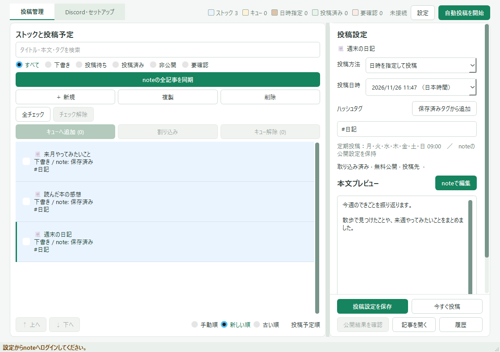
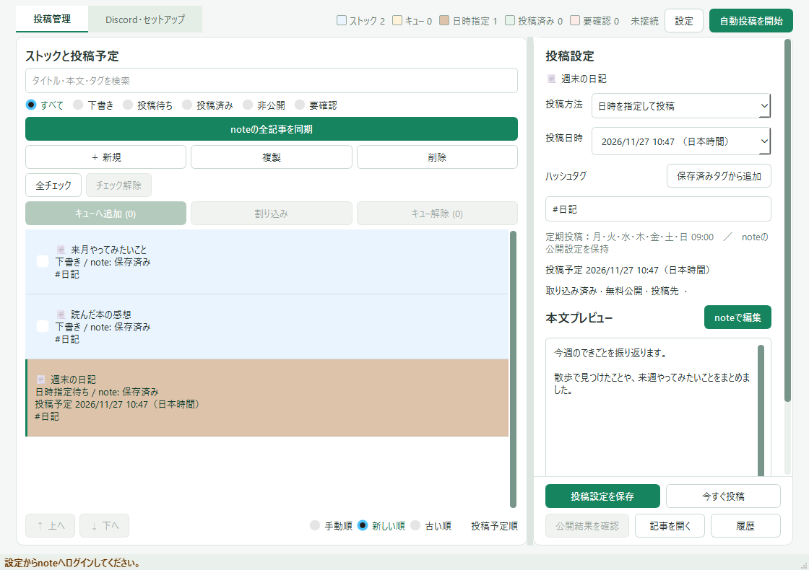

詳細説明書の目次
日時指定の予約と一時停止
PC・Discordの予約、変更・取消、停止中と期限超過
日時指定・定期投稿・note自体の予約の違い
| 方式 | 日時を決める場所 | 投稿する仕組み |
|---|---|---|
| 日時指定待ち | 記事ごとに年・月日・時刻を指定 | PCのnoteストックが時刻を確認して投稿 |
| 定期投稿待ち | PC設定の曜日・時刻とキューの順番 | 共通の投稿枠ごとに先頭から1本 |
| noteで予約済み | note側の公開設定 | note自体の予約。変更・取消はnoteで確認 |
このページはPCのnoteストックが管理する「日時指定」の説明です。定期投稿はキューの詳しい説明へ進んでください。
PCで日時を指定する


- 記事を選び、本文・公開条件を確認します。
- 投稿方法を「日時を指定して投稿」にします。
- 「投稿日時」で未来の年月日と時刻を選びます。年も確認します。
- 「投稿設定を保存」を押します。
- 対象の記事が「日時指定待ち」になり、指定した日時を表示することを確認します。
- 停止中なら「自動投稿を開始」を押します。
日付選択から開く時計画面と、設定画面の定期投稿用の時・分パネルは別です。設定画面の共通時刻を変えても、記事ごとの日時指定を同じ時刻に変更する操作にはなりません。
Discordのカレンダーと時刻選択
- 操作メニュー→記事一覧→対象記事→「予約・日時変更」を開きます。
- カレンダーの「前月」「翌月」で月を合わせ、日付を押します。過去の日付は選べません。
- 「時を選択」で00〜23時を選び、「分を選択」で分を選びます。分は5分刻みと現在選択中の値が候補になります。
- 「−1分」「＋1分」で1分単位に調整できます。「日付へ戻る」で日付を選び直せます。
- 「この時刻で確認」を押します。
- 記事名と日本時間の日時を確認し、「この日時で予約する」を押します。
- 処理結果と「予約一覧」の日時を確認します。
分の調整で23:59から＋1分すると時刻は00:00へ回ります。日付も翌日にしたい場合は、日付を選び直してください。予約が過去になる組み合わせは受け付けません。
予約の変更・取消
変更：PCは投稿日時を変更して「投稿設定を保存」。Discordは同じ記事の「予約・日時変更」を開き、新しい日時で確定します。
取消：Discordは「予約取消」。PCは投稿方法を「下書きとして保存（投稿未定）」にして保存します。記事は残ります。
公開済み・処理中・結果未確認などの記事は、通常の下書きと同じように日時を変更できません。公開結果や編集の処理を確認してから次の操作を選んでください。
自動投稿を一時停止するとどうなるか
PCの自動投稿ボタン、またはDiscordの「自動投稿 停止／再開」で停止します。停止しても予約情報は消えません。処理を開始していない予約が新しく実行されなくなります。
すでに処理中の1件は、結果確認まで続行します。停止ボタンは実行済みの公開を取り消す操作ではありません。PCのDiscord連携の停止と、自動投稿の停止も別です。
接続確認が外れている場合は、ログイン・接続確認を完了してから再開します。再開後は一覧の日時と状態を見直してください。
停止・終了・スリープ中に予約時刻を過ぎた場合
日時指定の予約は「期限超過」として残ります。起動・再開時に、期限を過ぎた記事をまとめて公開する動作ではありません。対象を開いて未来の日時で予約し直すか、内容を確認して今すぐ投稿します。


PCの時計の大きな変化や長い休止が検出された場合にも期限確認が行われます。日時は日本時間で扱うため、年・日付・時刻に加えてPCの時刻設定も確認してください。
起動時・複数予約・予約直前の変更
接続確認が保存されている場合、通常起動時に自動投稿が有効になる仕組みがあります。前回停止したつもりでも、起動後のボタンと状態表示を確認してください。未確認の接続では停止状態になります。
複数の記事は順に処理されます。通信・note側の処理・別のブラウザー操作があると、指定時刻から完了まで時間がかかる場合があります。指定時刻ぴったりの公開完了を保証する機能ではありません。
予約を操作している間に指定時刻が過去になった場合は登録が拒否されます。数十秒後など余裕のない予約で失敗した場合は、未来の時刻を選び直してください。